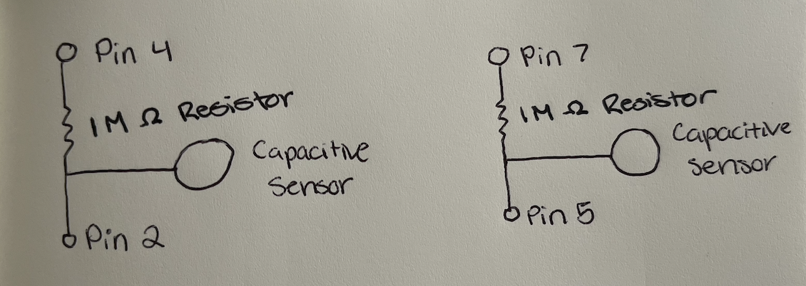
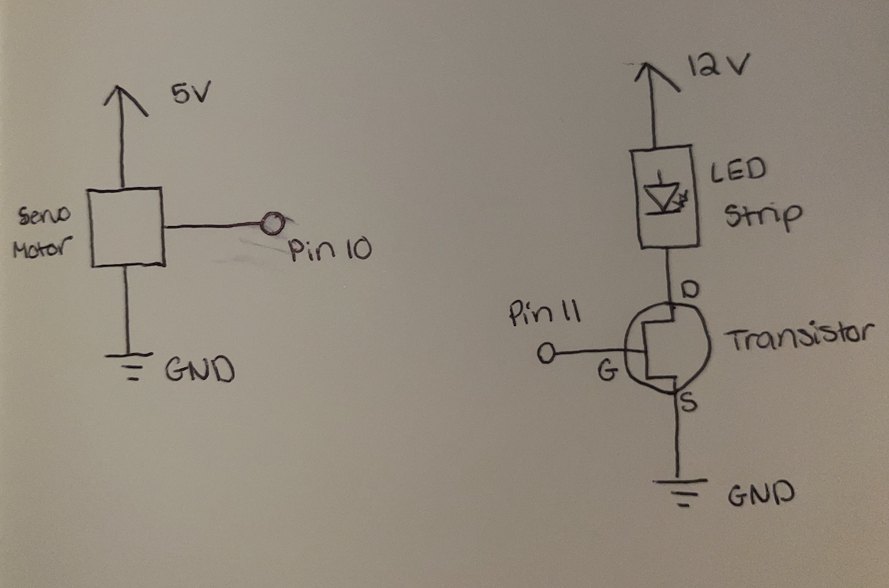
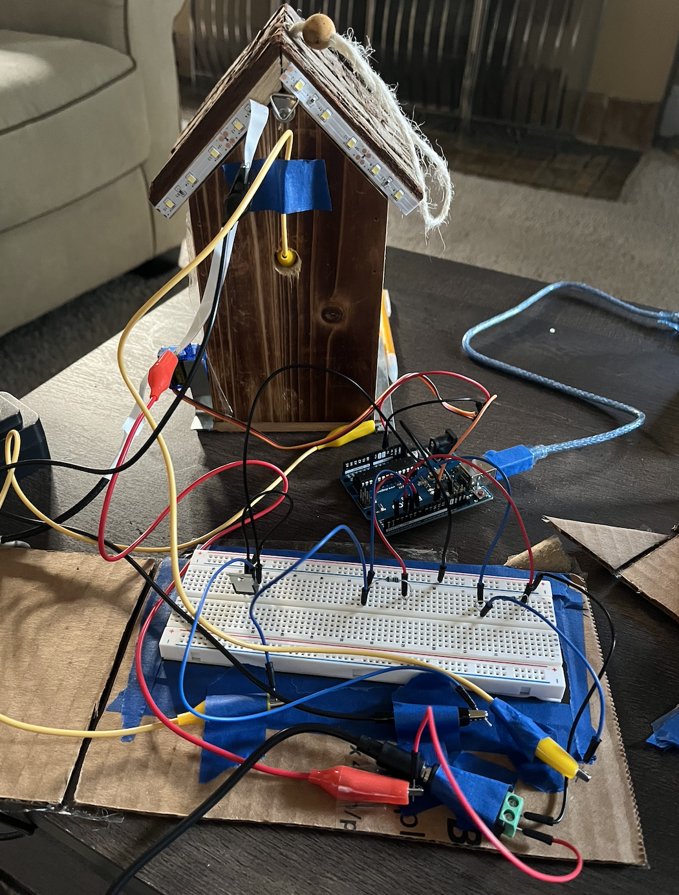
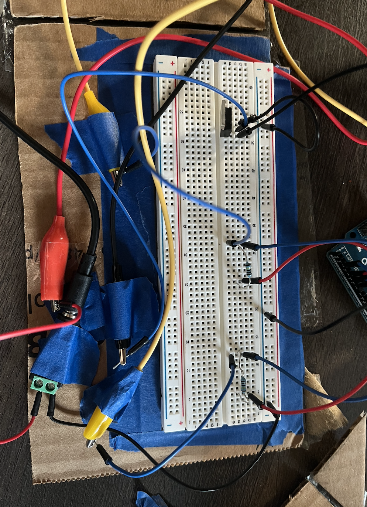
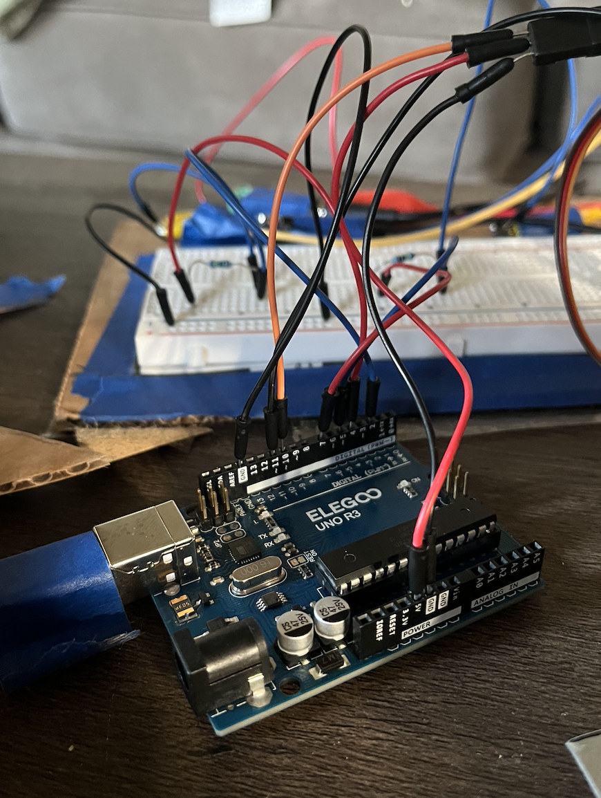
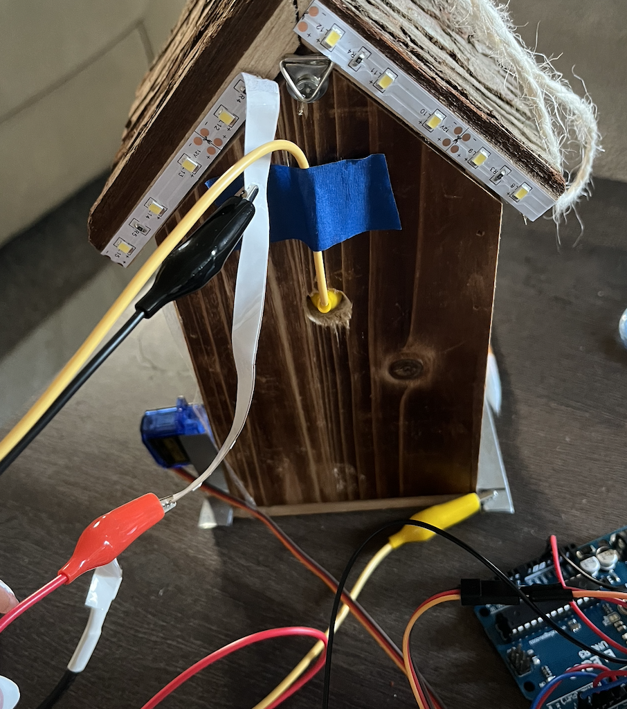
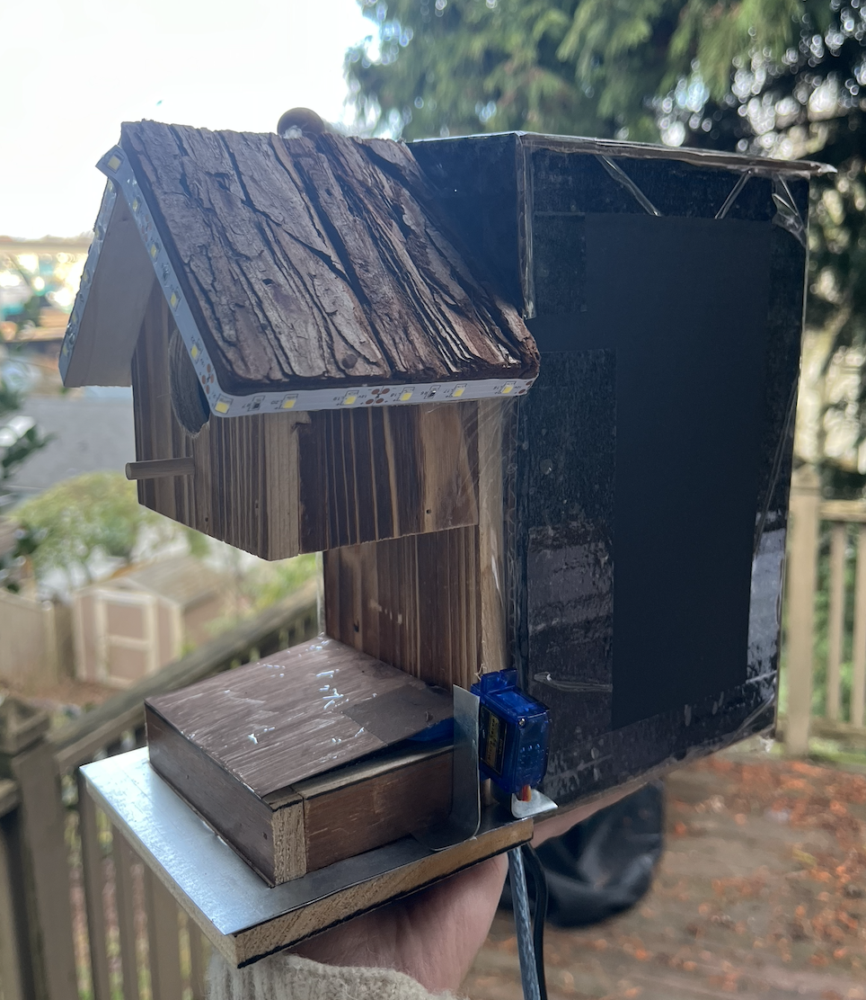
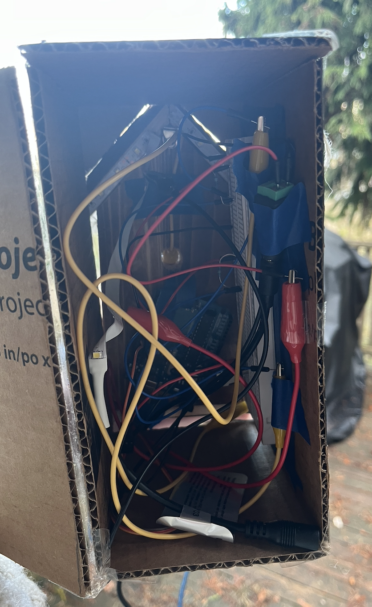

Here is my proposal for my final project! I decided to make a birdhouse that lights up around the outside of the house when the bird goes inside of the house. It also has a lid that covers the
food tray which opens when the bird sits next to the food tray. I wanted the birdhouse to light up so that the owner of the birdhouse would know when there was a bird using it and could go look at the
bird. I incorporated the food lid so that the bird food wouldnt be exposed at all times but only when a bird was trying to eat.

Here are my drawings of the schematic for this circuit. I connected the capacitive sensor around the food tray to pins 2 and 4. I connected the capacitive sensor inside the bird house
to pins 5 and 7. I used 1M ohm resistors to connect the capacitive sensors to the arduino in order to make the sensors require absolute touch to turn on the LEDs and open the food lid.
I used the LED strip which I connected to an external power supply (12V) and to a N-MOSFET transistor which I connected to pin 11 and the ground on my Arduino. I also used a servo motor
which I connected to pin 10, the 5V pin, and the ground.


Here is my circuit I made. I chose to use a servo motor and the LED strip. I also used two capacitive sensors. I connected the capacitive sensor
around the food tray to pins 2 and 4. I connected the capacitive sensor inside the bird house to pins 5 and 7. I used 1M ohm resistors to connect
the capacitive sensors to the Arduino so that the birds will have to touch the metal pieces in order to turn on the LEDs and open the food lid.
I connected the servo motor to pin 10 as well as the 5V pin, and the ground. I connected the LED strip to the external power supply and the transistor
which was connected to pin 11 on my Arduino. Based on the specfications for the LED strip and the resistors that are included in the LED strip, it says
that if using a 12V power source it will result in 1.5 A of current. According to the datasheet for the transistor I am using, it has a maximum current of 37.2 A so the amount of
current that I am using is less than the maximum and is safe to use.




Here is the birdhouse that I made. I cut out pieces of metal for my capacitive sensors and attatched one around the edges of the food tray and another smaller one on the floor, inside of the birdhouse. I connected both of these pieces
to the breadboard and my arduino using the aligator clip cables. I drilled a hole in the back of the birdhouse so that the cable connecting the capacitive sesnor inside the house could go through the back of
the house and not be seen from the front. I also cut out a a thin, lightweight piece of metal to use as the food lid and attached it to the servo motor. I then attched the servo motor to the outside of the birdhouse, so that the lid
was covering the food tray, and connected the motor to my arduino. I trimed and attatched the LED strip around the outide of the birdhouse roof and connected it to the 12V power source, and to the arduino through a transistor. Once the rest
of my circuit was assembled, I enclosed all of the wiring, breadboard, and arduino within a cardboard box so that the circuit can not be seen and the birds/elements can't access it. The cardboard box can be opened from the back if it needs to be so that
I can access the circuit. The box also has small cut outs in it so that the aligator clips to the capacitive sensors, wires from the servo motor, and cords from the 12V power source and arduino can exit the box to be plugged in.


Here is a code snipit from the Arduino code that I wrote for the circuit. I used the Capacitive Sensor and Servo libraries. I connected my LEDs through my transistor to pin 11 and my servo motor to pin 10. I connected the
capacitive sensor for the servo motor to pins 2 and 4. I connected the capacitive sensor for the LEDs to pins 5 and 7. I set the pin mode of pin 11 to output which allows the PMW signal to control the gate of the transistor,
allowing for the arduino to control a higher voltage than it could on its own.
I chose to use the smoothing method for every 10 readings for each sensor because I was getting inconsistent readings when testing which was leading to flickering in my LEDs and excess movement in my servo motor that I didnt want.
Due to the inconsistent readings when testing I chose to calibrate each sensor in the setup of program for 5 seconds each. In the first five seconds the servo motor sensor is calibrated and in the next five seconds the LED sensor is
calibrated. During testing I noticed that the LEDs and servo motor were struggling to reach fully on and fully off so I decided to reduce the sensor windows for each sensor by adding 100 to each minimum value found and subtract 100
from each maximum value found. I constrained the average reading values from each sensor to the calibrated max and min values found in the set up. I mapped the LED strip PMW number from 0 to 255 to allow the LEDs to turn all the way on and off.
A higher PMW number results in a higher duty cycle and brighter LEDs, while a lower PMW number results in a lower duty cycle and dimmer LEDs. I mapped the servo motor degrees from 0 to 50 to make sure the food lid can close compeletely
and doesn't run into the house when fully opened.
My code delays each reading by 100ms to give the servo motor time to rotate and the LED lights time to turn on.
#include <CapacitiveSensor.h> // Use capacitive sensor library
#include <Servo.h> // Use capacitive servo library
CapacitiveSensor cs_LED = CapacitiveSensor(4,2); // create a capacitive sensor object between pins 7 and 5
long sensorValueLED = 0; // the LED sensor value
int sensorMinLED = 1023; // minimum LED sensor value
int sensorMaxLED = 0; // maximum LED sensor value
CapacitiveSensor cs_servo = CapacitiveSensor(7,5); // create a capacitive sensor object between pins 2 and 4
long sensorValueServo = 0; // the servo sensor value
int sensorMinServo = 1023; // minimum servo sensor value
int sensorMaxServo = 0; // maximum servo sensor value
Servo myServo; // create a servo object
int servoPin = 10; // sets servo pin to pin 10
int LEDPin = 11; // sets LED pin to pin 11
const int numReadings = 10; // number of readings before averaging
int readingsServo[numReadings]; // the readings from the servoinput
int readIndexServo = 0; // the index of the current reading for the servo
int totalServo = 0; // the running total of the servo readings
int averageServo = 0; // the average of the servo readings
int conAveServo = 0; // the average servo reading within constraints
int readingsLED[numReadings]; // the readings from the LED analog input
int readIndexLED = 0; // the index of the current reading for the LED
int totalLED = 0; // the running total of the LED readings
int averageLED = 0; // the average of the LED readings
int conAveLED = 0; // the average LED reading within constraints
void setup() {
cs_LED.set_CS_AutocaL_Millis(0xFFFFFFFF); // turn off autocalibrate on arduino for LEDS
cs_servo.set_CS_AutocaL_Millis(0xFFFFFFFF); // turn off autocalibrate on arduino for servo
Serial.begin(9600); // initialize serial communications at 9600 bps
pinMode(LEDPin, OUTPUT); // set LED pin to be an output
myServo.attach(servoPin); // attaches the servo to the servo object
// calibrate servo sensor during the first five seconds
while (millis() < 5000) {
Serial.println("Calibrating Servo Sensor"); // prints that it is calibrating the servo sensor
sensorValueServo = cs_servo.capacitiveSensor(30); // gets capacitive sensor value for servo
Serial.println(sensorValueServo); // prints sensor value
// record the maximum sensor value for the servo
if (sensorValueServo > sensorMaxServo) {
sensorMaxServo = sensorValueServo;
}
// record the minimum sensor value for the servo
if (sensorValueServo < sensorMinServo) {
sensorMinServo = sensorValueServo;
}
sensorMaxServo = sensorMaxServo - 100; // lowers max sensor value by 100
sensorMinServo = sensorMinServo + 100; // raises min sensor value by 100
}
// calibrate LED sensor between five and ten seconds
while (millis() > 5000 && millis() < 10000) {
Serial.println("Calibrating LED sensor"); // prints that it is calibrating the LED sensor
sensorValueLED = cs_LED.capacitiveSensor(30); // gets capacitive sensor value for LEDs
Serial.println(sensorValueLED); // prints sesnsor value
// record the maximum LED sensor value
if (sensorValueLED > sensorMaxLED) {
sensorMaxLED = sensorValueLED;
}
// record the minimum LED sensor value
if (sensorValueLED < sensorMinLED) {
sensorMinLED = sensorValueLED;
}
sensorMaxLED = sensorMaxLED - 100; // lowers max LED value by 100
sensorMinLED = sensorMinLED + 100; // raises min LED value by 100
}
// initialize all the Servo readings to 0:
for (int thisReading = 0; thisReading < numReadings; thisReading++) {
readingsServo[thisReading] = 0;
}
// initialize all the LED readings to 0:
for (int thisReading = 0; thisReading < numReadings; thisReading++) {
readingsLED[thisReading] = 0;
}
}
void loop() {
long start = millis(); // record number of milliseconds that have passed
// subtract the last servo reading:
totalServo = totalServo - readingsServo[readIndexServo];
// subtract the last LED reading:
totalLED = totalLED - readingsLED[readIndexLED];
long readingServo = cs_servo.capacitiveSensor(30); // record value returned from servo sensor
// read from the servo sensor:
readingsServo[readIndexServo] = readingServo;
// add the reading to the total:
totalServo = totalServo + readingsServo[readIndexServo];
// advance to the next position in the array:
readIndexServo = readIndexServo + 1;
// if we're at the end of the array...
if (readIndexServo >= numReadings) {
// ...wrap around to the beginning:
readIndexServo = 0;
}
long readingLED = cs_LED.capacitiveSensor(30); // record value returned from LED sensor
// read from the LED sensor:
readingsLED[readIndexLED] = readingLED;
// add the reading to the total:
totalLED = totalLED + readingsLED[readIndexLED];
// advance to the next position in the array:
readIndexLED = readIndexLED + 1;
// if we're at the end of the array...
if (readIndexLED >= numReadings) {
// ...wrap around to the beginning:
readIndexLED = 0;
}
averageServo = totalServo / numReadings; // calculate the average for the servo:
conAveServo = constrain(averageServo, sensorMinServo, sensorMaxServo); // constrain the average reading to between min and max
conAveServo = map(conAveServo, sensorMinServo, sensorMaxServo, 0, 50); // map servo sensor values to degrees for servo motor
myServo.write(conAveServo); // rotate servo motor
averageLED = totalLED / numReadings; // calculate the average for the LEDs:
conAveLED = constrain(averageLED, sensorMinLED, sensorMaxLED); // constrain the average reading to between min and max
conAveLED = map(conAveLED, sensorMinLED, sensorMaxLED, 0, 255); // map servo sensor values to PMW values for LEDs
analogWrite(LEDPin, conAveLED); // set LED pin to the PMW number
Serial.print(millis() - start); // check on performance in milliseconds
Serial.print("\t"); // tab character for debug window spacing
Serial.print(conAveServo); // print servo sensor reading average
Serial.print("\t"); // tab character for debug window spacing
Serial.println(conAveLED); // print LED sensor reading average
delay(100); // delay 100ms to limit data to serial port
}
Here is a demo video of the functioning birdhouse circuit. In this video you can see me calibrating the sensors, turning on the
LEDs using the sensor inside of the house, and opening the food lid using the sensor by the food tray.